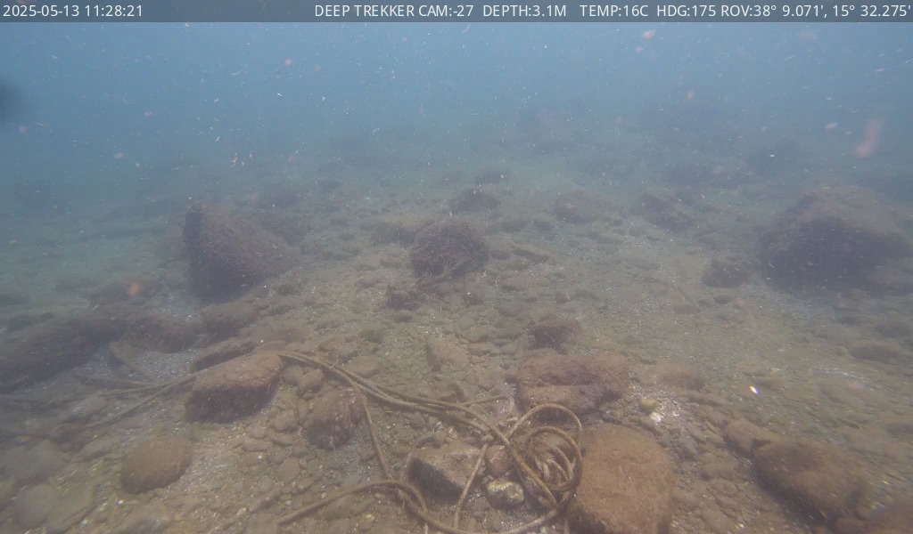
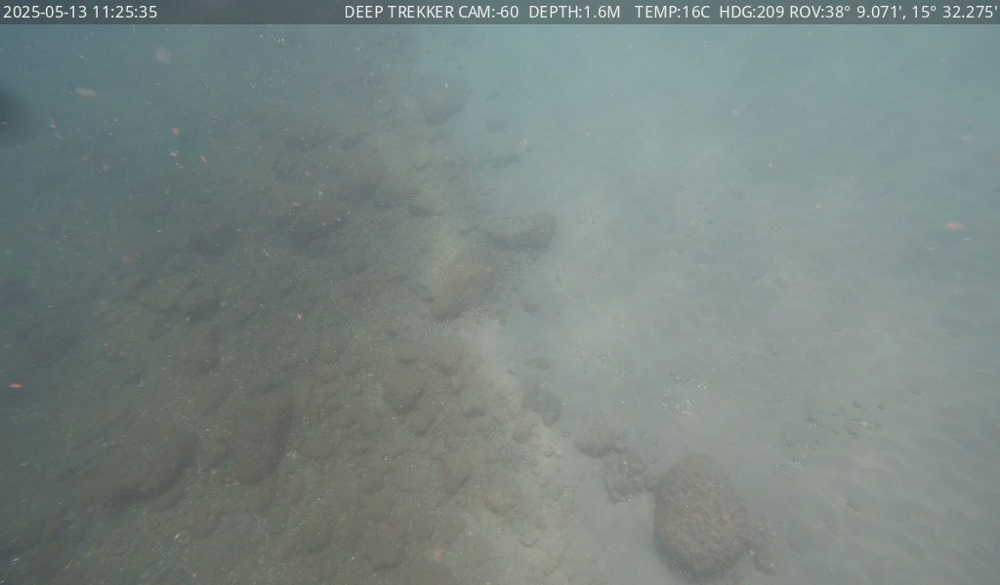
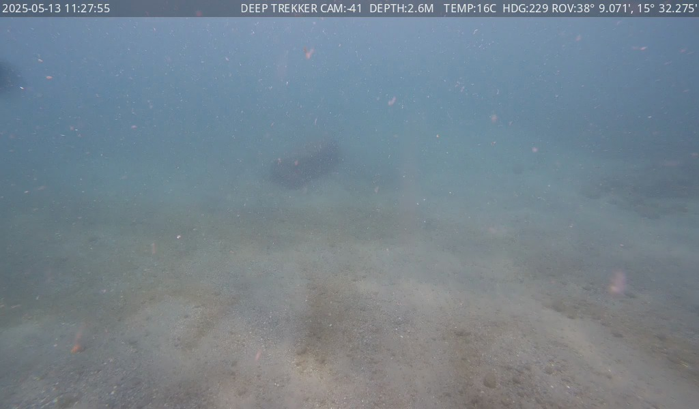
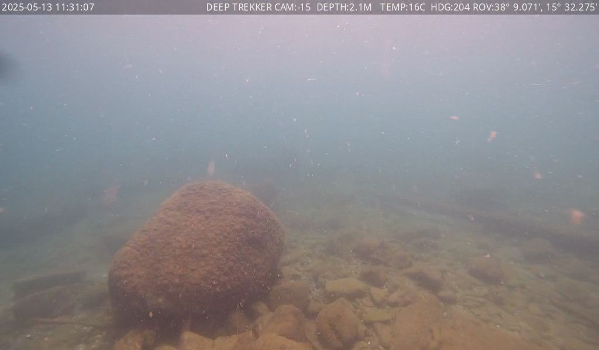
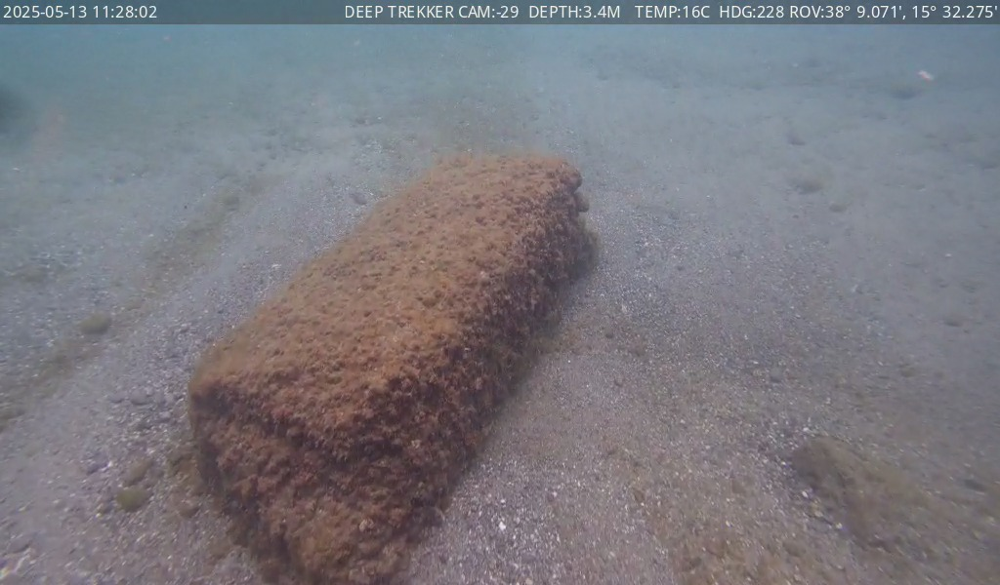
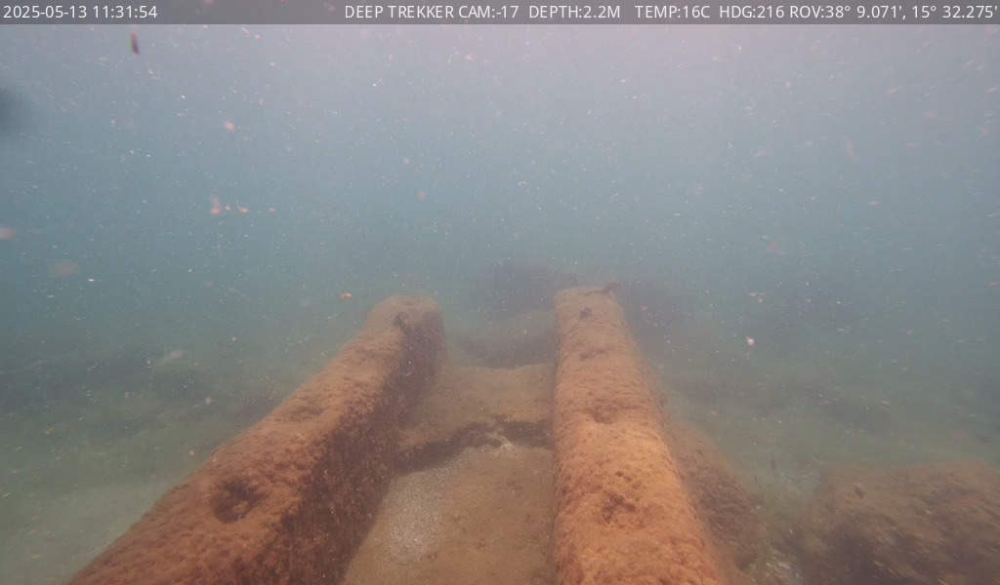

🧬
DINOv3 — novelty
Measures how visually different each frame is, so the selector keeps novel views and skips near-duplicates.
facebook/dinov3-vits16 · ViT-S/16 · ≈ 90 MB
A local, script-based pipeline that selects the frames worth looking at, annotates them with an on-device VLM, and synthesizes one inspection report — no cloud, no API keys. Here is the whole thing in three steps:
Play through the dive and capture only the frames worth looking at.
select_keyframes.py





RECA local model reads each keyframe into structured, conservative fields.
analyze_keyframes_vlm.py
Group similar frames, keep conservative representatives, write one report.
synthesize_report.py
# Run the full pipeline (Stage 1 → 2 → 3) in one command
$ python scripts/run_pipeline.py --config configs/video1.yaml
# …or run the stages individually
$ python scripts/select_keyframes.py --config configs/video1.yaml
$ python scripts/analyze_keyframes_vlm.py --config configs/video1.yaml
$ python scripts/synthesize_report.py --config configs/video1.yamlFrom a ~7 minute dive, the pipeline kept 14 representative keyframes and flagged what's worth a second look. Hover a frame.

Underwater visibility makes findings genuinely uncertain. Every status field can say “possible” — ambiguity is flagged, not hidden.
algae_statuswaste_statusfauna_statusstructure_statusA tether or cable is never mistaken for debris or a fixed structure.
rov_equipment_status — none / possible / clearrov_equipment_type — tether / cable / robot_part / otherMeasures how visually different each frame is, so the selector keeps novel views and skips near-duplicates.
facebook/dinov3-vits16 · ViT-S/16 · ≈ 90 MB
Describes each keyframe and fills the structured annotation, served on Apple Metal via mlx-vlm.
Qwen3-VL-4B-Instruct-4bit · ≈ 2.5 GB
Python 3.13, PyTorch, Transformers, OpenCV and MLX — pinned in pyproject.toml.
macOS · Apple Silicon · MIT licensed
# 1 · Clone
$ git clone https://github.com/ferdagainagainagain/rov-seabed-inspection.git
$ cd rov-seabed-inspection
# 2 · Create and activate a virtual environment
$ python3 -m venv .venv && source .venv/bin/activate
# 3 · Install the project and its pinned dependencies
$ pip install --upgrade pip
$ pip install -e .
Requirements: macOS on Apple Silicon (M-series) with Metal. The VLM stage uses
mlx-vlm, so run it from a normal macOS terminal. Tested with Python 3.13.